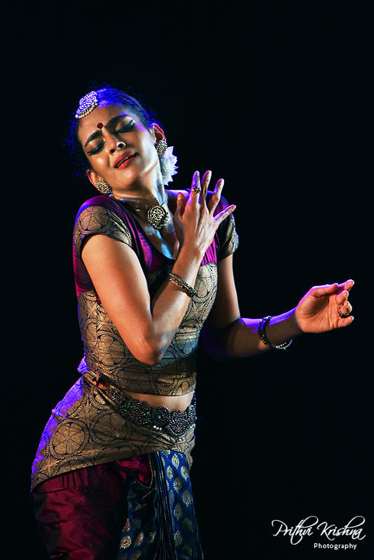
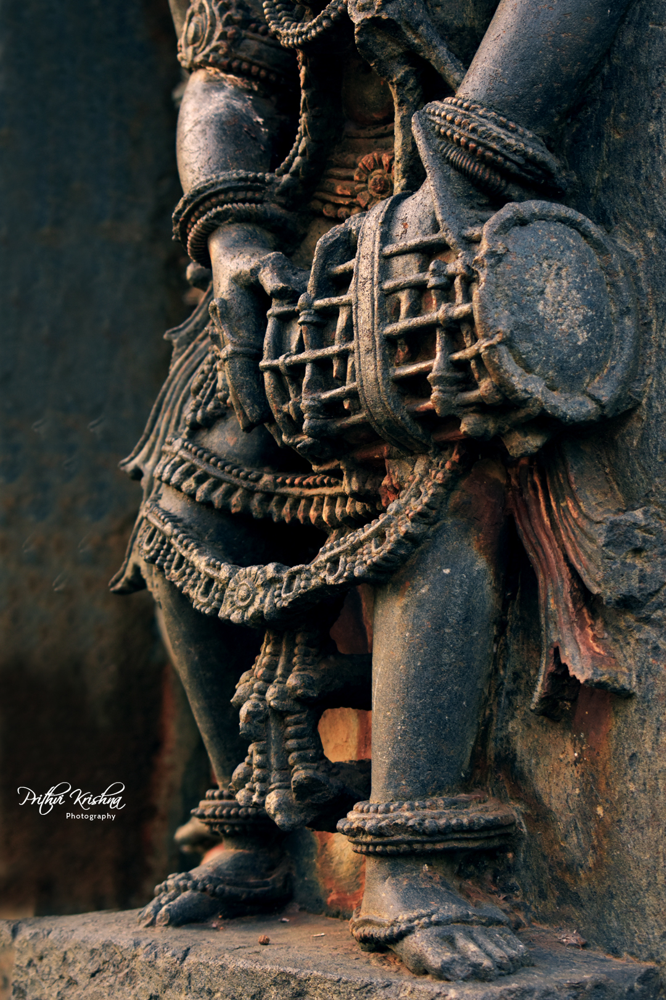

BEHIND THE LENS
The art of seeing.
An artist’s eye, drawn to movement, emotion, light and the stories held within a frame. Photography is another way of listening to the world.
Explore photography ↗VISUAL STORIES · SELECTED WORK
EXPLORE THE PORTFOLIO
Different frames. One perspective.
A selection of visual stories across performance, portraiture and art.

EXPLOREDance PhotographyMovement, expression and the language of the body.↗ EXPLOREFashion & PortraitureEditorial portraits, character and visual style.↗
EXPLOREFashion & PortraitureEditorial portraits, character and visual style.↗
EXPLOREArt PhotographyLight, texture and the poetry of the everyday.↗EXPLOREArchitecture & PlacesA visual appreciation of space, heritage and form.↗